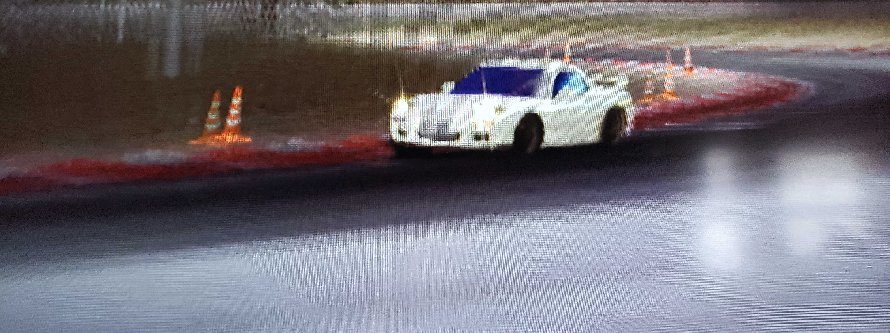

Old Games Like New
There is no school like the old school! Learn what it takes to get your old games on the big screen.
This guide covers the basic fundamentals of analogue video cables and what inputs your tv supports. If you are still curious, additional links are provided to answer any questions you might still have!